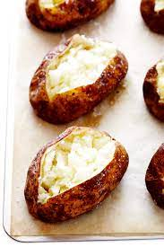

Baked Potatoes

A great side to go with the steak recipe on the previous page!
This is also a very simple recipe that makes a great side to a lot of dishes or even as its own entree! You just have to pick potatoes of your choice, get it ready to go in the oven and wait! So lets get into it!
Ingredients
Steps
- Preheat oven to 350 degrees (175 degrees C).
- Wash potatoe off with water and rub with hands or a clean brush.
- Take fork or toothpick and poke holes in your potatoe. This allows the steam to be released from the potatoe so it doesn't explode in your oven!
- Place potatoe on a baking sheet, and bake your potatoe for 1 1/2 hours. Enjoy!